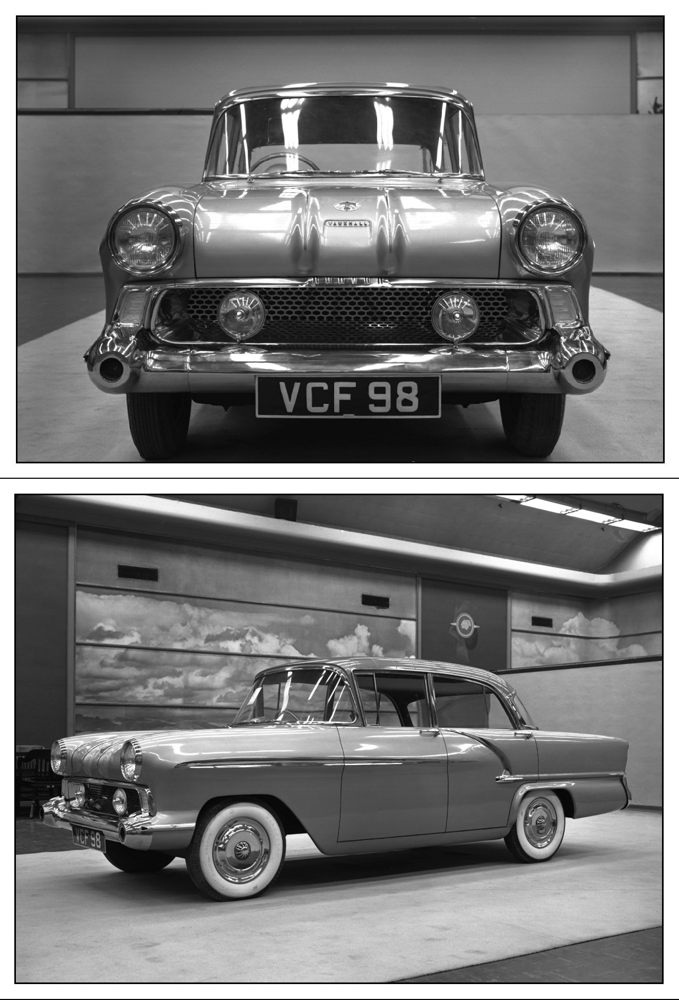

About the Car
The Vauxhall Victor F-Type was launched on February 28, 1957, featuring a unitary construction, American-influenced styling with a large glass area and heavily curved windscreen, and a scaled-down 1955 Chevrolet Bel Air look. Production of the F-Type Victor ran until 1961, with almost 400,000 units built, and it was known for its rapid and severe structural corrosion due to thin-gauge steel and design flaws. Despite early popularity and export success, the F-Type was eventually replaced by the slightly revised, less American-styled FB model in 1961.
Key Characteristics
- American Styling: The Victor F-Type adopted American styling trends of the time, including a large, curved windscreen and sloping A-pillars, drawing inspiration from the 1955 Chevrolet Bel Air.
- Unitary Construction: The car featured a monocoque body, which was a departure from traditional body-on-chassis construction at the time.
- Large Glass Area: The car had a notably large amount of glass for its era, including a deeply curved windscreen and rear window, contributing to a bright interior.
- Interior: It featured front and rear bench seats trimmed in Rayon and a two-tone trim was standard.
- Engine: The initial F-Type was powered by a 1.5-liter (1508cc) four-cylinder overhead-valve engine producing 55bhp.
History
- Launch: The F-Type Victor was launched in 1957 as a replacement for earlier models like the Vauxhall Wyvern.
- Success: The Victor became a strong seller in the British market and was also notably exported, including to the United States and Canada via the Pontiac dealer network.
- Facelift (Series II): A Series II model was introduced in 1959 with simplified styling to remove some of the more extreme American styling elements.
- Corrosion Issues: A significant problem was the car's poor resistance to structural corrosion. This was attributed to several factors, including the use of thin-gauge steel to minimize weight and numerous trapped moisture points in the body design.
- Successor: The F-Type was succeeded by the Vauxhall Victor FB, which went on sale in late 1960 with a less overtly American design.